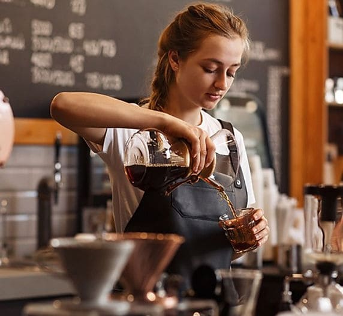

No Est Belle Café, estamos sempre em busca de talentos apaixonados por café e atendimento ao cliente. Se você deseja fazer parte de uma equipe acolhedora e criativa, onde o seu trabalho pode fazer a diferença na experiência dos nossos clientes, esta é a sua oportunidade!
Buscamos pessoas que:
Buscamos pessoas que:
Se você está pronto para embarcar nessa jornada conosco e contribuir para a melhor experiência em café que nossos clientes podem ter, envie seu currículo e uma breve carta de apresentação para gabriella.dias@estbellecafe.com. No assunto, inclua "Candidatura – [Seu Cargo Desejado]".
Estamos ansiosos para conhecer você e fazer parte da nossa história!
